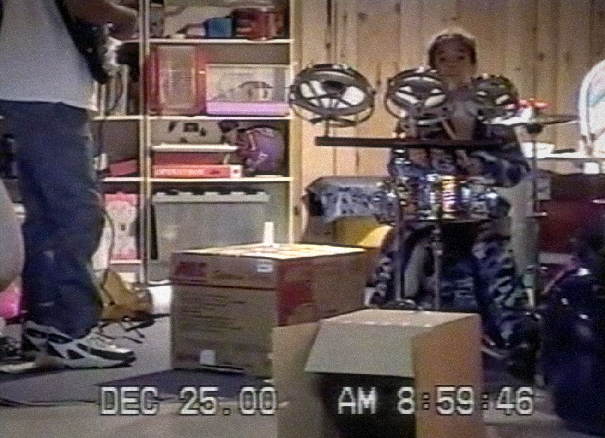
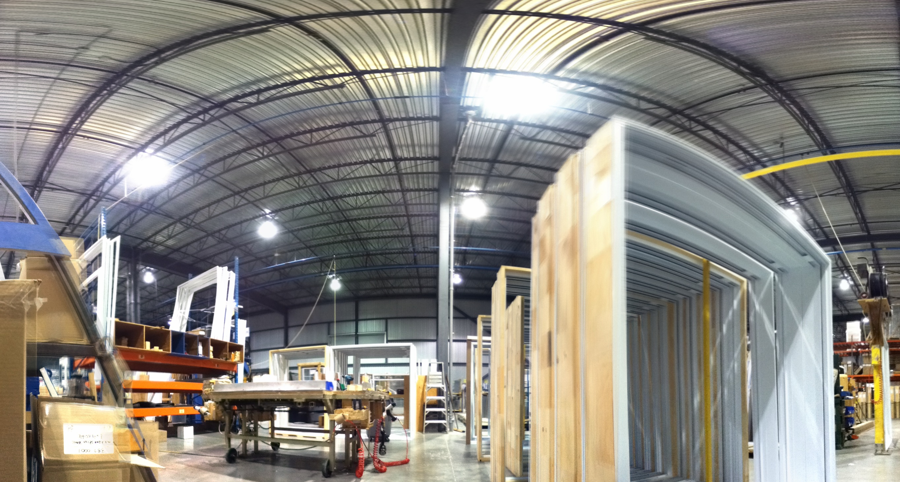

← BACK
FOREVER IN SOUND
NOT A PORTFOLIO
This page is a backwards journal.
An evolving archive of everything I’ve created and how it shaped the artist I am today.
Part reflection, part guide, it traces my process, the tools I’ve used, and the events that have influenced my work.
Over the years, my research and experiments have pushed me to explore different aspects of sound, immersive experiences, performance, and instrument design.
Most of all, they have taught me how to generate ideas quickly, remove filters, and embrace imperfection.
EARLY YEARS
There are videos of me banging on pots and pans at age 2, but it is around age 8 that I started asking for a
drum set.
I felt a special connection to the instrument after a college jazz band performed at my school, and I could feel
the bass drum in my chest.
I thought this was a calling from the instrument itself that only I could hear.
Two years later, my parents gifted me a snare, a hi-hat, and a cardboard box, which my father rigged with a bass
drum pedal.
We had a family computer in the room next to the play area, and when I was 12, my parents let me run an audio
extension cable so the cheap Logitech computer mic could reach the ceiling above the drums.
This became my first recording setup, where I would layer drums over electric piano using Audacity.
I wasn't drawn to any specific style of music, but I knew I loved the feeling of sound.
The music that filled my household was mostly '70s funk and the soundtracks from our weekly movie rentals.
I was especially drawn to cinematic scores and later realized that many of them were composed by Philip Glass.

INSOMNIA LEARNING
I had insomnia in my teens and tried to use it as a power.
I spent hours at night on forums like Drummerworld, memorizing every drummer's bio, setup, playing style, and
exercises.
I also became active on Cymbalholics and Ghostnote, which focused on cymbal making and drum building.
In 2005, YouTube arrived, and I started searching for live performances, jumping from video to video.
A turning point was discovering The Bad Plus.
I had never seen a drummer like Dave King who placed small cymbals and objects on drums, and used kids' toys as
part of his setup.
On top of that, their music felt free, with constantly shifting beats, everything seeming to fall apart yet
staying strongly connected.
It was chaotic and structured at the same time. It felt like the music was about the bigger picture, not just
the individual parts.
That YouTube recommendation led me into jazz, where I found my most influential drummers like Brian Blade and
Dan Weiss.
I also became obsessed with piano trios like Tigran Hamasyan, Shai Maestro, and Brad Mehldau.
I would go deep into entire discographies, listening to them on repeat for months, trying to absorb the
vocabulary.
The Smalls Live audio archive became an important tool for hearing raw sessions from these musicians.
COMPOSITION, RECORDING & VIDEOS
Around 2006, my parents bought a MacBook for the family. It had GarageBand, iMovie, and a webcam.
It had everything I needed to start documenting my drumming.
I shared videos on the forums I frequented to get feedback on my playing.
I later bought a cheap M-Audio interface off eBay, paired with MXL 990 and 2001 microphones.
By 2007, I was writing and recording full compositions, layering drums, piano, and MIDI bass.
Later, I found Jack Conte's VideoSongs on YouTube.
He was one of the first people creating music sessions from his home studio, performing every instrument with no
lip-syncing or hidden sounds.
His high output and creative video approach stood out to me.
His music leaned more pop than what I typically allowed myself to listen to, but I loved the intricate
harmonies, raw sound, and how the production process was fully visible.
drums, electronic piano, and electric bass
SCHOOL
Despite my jazz mindset, I enrolled in a three-year CEGEP (college) program for pop music.
This trained musicians to learn quickly, sight-read with confidence, and write efficient lead sheets.
Most graduates aimed to become TV set musicians, play in top 40 bands, or work cruise ship gigs.
My playing was soft and textural, and I was obsessed with odd meters, odd groupings, and quintuplets. None of
which were popular with people in that program.
Since I had already covered most of the drum curriculum in private lessons between ages 16 and 17, my drum
teachers let me guide my own studies, giving me opportunities outside the standard curriculum.
They placed me in the Big Band and the Musical Theatre pit orchestra, making my degree more intensive.
While the program was designed to prepare students for the industry, I planned to continue my studies at a
university.
FACTORY WORK & AUDITIONS
Near the end of my CEGEP program, I applied to two universities. I was rejected from the one I wanted to attend
and accepted at the other. I decided to take a sabbatical year to save money and re-audition.
I returned to the patio door factory where I had worked summers, now as a full-time employee. I took every
overtime shift I could. Two extra hours in the morning, two at night, and some weekends. I treated the job like
an learning an instrument, trying to optimize every motion. I became very fast. Eventually, overtime turned from
optional to expected.
The work damaged my hands. I started getting electric shocks from hammering cheap plastic parts around glass.
Turning round doorknobs or tying my shoes made my hands spasm. I was also gigging at night, and gripping sticks
became increasingly difficult.
The factory usually laid off workers for the winter, starting with those who asked. I asked. But every week,
they said “just a few more days,” again and again. My hands were getting worse, and I started to fear that the
job I took to support my music would end up costing me exactly that. One night, ready to quit, I asked again to
be cut. They said, “We’re keeping you all winter.” I felt the anger rise in my body, until they added, “Just
kidding. You can go.”
I got really sick right after, having pushed my body too far. My hands needed time to heal. I couldn’t properly
prepare for the audition, but my attitude certainly changed.
The year before, I had played like what I thought the jury wanted to hear.
This time, I played like my full self and was accepted.
I think that assertive energy came from not wanting to ever go back to that patio door place.

AFTER SCHOOL
I eventually moved to Montreal to start a bachelor's degree in Jazz Performance.
For the first time, I had no space to practice drums and had to rely on the school's rarely available practice
rooms.
The academic environment pressured me to write complex music, which led to a creative blockage. This drained the
fun out of music, and I dropped out after a year.
I then rented a tiny rehearsal space just big enough for a drum kit and a few mics.
The walls were thin, and loud bands rehearsed around me, making it difficult to practice or record.
To work around this, I started going in early mornings or late at night.
This is where I first experimented with electronics and drums, running an SM57 on the floor tom through an EHX
Memory Man delay pedal, with a Microkorg for extra sounds.
This is one of my earliest videos combining drums and electronics.
FROM JAZZ TO INDIE
I spent a significant amount of time studying Miles Okazaki's work, particularly his Four Pulse Study, which
explored all possible groupings of 2 and 3 in different subdivisions.
His mathematical and visual approach to rhythm fascinated me.
I applied for a Canadian grant to study in New York City with Dan Weiss, a longtime collaborator of Okazaki.
The grant was denied. That rejection forced me to reassess my career path and rather than focusing on jazz, I
decided to aim to make my name locally as a creative, textural drummer in the indie scene.
One of the drummers who stood out in this style was Robbie Kuster, Patrick Watson's drummer.
I liked that he rarely played a traditional backbeat on the snare, instead using crashes, floor toms, and
unconventional objects to mark time.
Without realizing it, I was becoming more interested in sound design.
I was already playing in a few indie/rock bands, and before long, I started accompanying the bands we opened
for and the bands that opened for us.
I'd offer to play with as many people as I could, running between venues to play multiple shows in a night.
It felt like the right direction.
I was playing so much that it soon made sense to move into a better shared rehearsal space with some of my
bandmates.
I spent nearly all my time there, rotating between different projects.
I would record synth tracks at home in Logic and add drums to them between rehearsals.
Over time, I set up my Microkorg, Boss RC-3, and a small mixer, which gave me more routing options for looping.
This brought me back into experimenting with electronics and drums together.
CREATIVE LIMITATIONS
I pushed myself to unlearn everything I had picked up in school.
Being a trained musician seemed frowned upon in the indie scene.
I created a set of strict rules to break my habits, like limiting myself to eight notes, no fills allowed, and
never playing more than two consecutive notes with the same hand.
I detuned my snare to finger-tight, eliminating rebound for ghost notes and removed the rack tom to block
muscle-memory fills.
I wanted my playing to be raw and minimalist, moving away from my more technical and intricate playing. I fell
in love with flams and slow tempos.
I believed that if I played with everyone, something would eventually work out.
At one point, I was in about 25 different projects. Some bands started signing with labels, but every time that
happened, I would lose the gig. Labels pushed them into duos or trios to open for their main acts, and drums
were cut.
This pattern kept repeating. To adapt, I started playing bass synth while drumming, hoping to make myself more
indispensable.
I swapped my Microkorg for a DSI Mopho X4.
A sound engineer friend reached out, offering a free studio session to practice mic'ing drums.
Without much planning, I asked two friends with cameras to capture the session.
That day made me realize how important it was to understand every aspect of production.
I wanted full control over my output, so I could work faster and maintain visibility.
I continued experimenting with running my floor tom mic through effects, using an A/B pedal to switch the input
on and off through a Dr. Scientist Reverberator and an EHX Memory Man Deluxe.
On the Mopho X4, I maxed out the envelope's sustain, making notes last until I played four new ones. This meant
I had to repeat triads to ensure no unwanted notes carried over. It also freed up my left hand to play drums.
I could add weight to the sound by slowly opening the filter.
I began focusing on building independence between my left hand on synths and my drumming, recording those
practice sessions with my iPod Touch.
I was also searching for ways to make the sound evolve within the one-hand limitation I was facing.
The EHX Pog2 became a key solution, allowing me to layer sounds by doubling them up to two octaves higher and
lower.
It also introduced a warbly, organ-like tone. I placed pedals on my snare for easy access while playing, which
also dampened the snare sound.
TURNING POINT
In 2015, live sessions were starting to pick up on YouTube.
I wanted the bands I was in to take advantage of this, suggesting we record weekly sessions and put them online.
I saw this as a better investment than the traditional route of playing local shows (pay to play), applying to
contests and festivals (pay to play), or recording EPs (pay to record) in hopes of getting label attention.
The local scene was small, and it felt like access to “the industry” was controlled by an exclusive group of
people.
The internet seemed like a way to bypass all of that and connect directly with fans.
I wasn't supported in this idea, and it was pushed aside.
This was when I started feeling artistically stuck, and realized I couldn't put more effort into a project than
the bandleader.
After all, these projects weren't actually mine. I existed in a gray area between an unpaid session musician and
a core band member.
That, combined with burnout, made me step away.
EP1: TAPE DEGRADATION
After leaving most of those projects, I shifted my focus to creating my own music, seeing it as a way to build
a portfolio for more serious opportunities.
It was also a way to develop production skills and take full control over my sound, style, and visibility.
I recorded my first EP, All These Are the Days, using only a Zoom H6, except for the drums which were done in a
studio.
For this EP, I experimented with cassette tapes, scratching them with a utility knife and recording over the
damaged tape.
This introduced degraded sounds, artifacts from previous recordings, shifting stereo fields, and saturation.
It also broke my tape machine.
To record drums, I went to an audio engineer friend's studio and brought back the tracks into logic.
I had no knowledge of how to mix and knew nothing of plugins but figured it was more about the long run than
this single project.
I wanted the skills for the future.
Working with synths and production brought back the fun in composing.
I no longer felt the pressure of harmonic, melodic, or rhythmic complexity.
It became about texture, tone, and feeling.
LIVE SETUP
I wanted to find a way to perform my compositions live. Since I wasn't fully satisfied with the video released
the year before,
I started searching for ways to free up my hands to control more sound.
Quitting my bands also meant losing access to a rehearsal space.
To be able to practice in my apartment, I sampled my own drum sounds from that previous studio session and
loaded them into a Roland SPD-S.
I combined this with a Keith McMillen 12 Step MIDI foot controller, which fit next to my hi-hat stand and
allowed me to trigger full chords with a single hit.
This freed my hands to focus on drums, synths, and manipulating pedals.
The EHX POG2 remained, allowing me to expand layers by shifting multiple octaves with a single slider.
EP2: EMBEDDING SPACE
I immediately started working on my second EP, The Field of Living, planning the first EPs as a triptych.
This was when I first integrated field recordings into my music. I heard a street-cleaning truck from my window
emitting a long drone and used it as the foundation for "Dark Room".
The metallic light fixture in my apartment became the intro for "Phases". "Tall Woman" featured water from the
drain outside my parents' house and streetcars from my apartment window.
I saw this as a way for me to remember where I was during all of this. A kind of proof of existence by injecting
space and time details into the recording.
I also started experimenting with re-amping. Not being into plugins at the time, I looked for ways to
physically alter sounds.
Playing audio through my phone inside a box and mic'ing it from the outside for a muffled effect, or to create
multiple versions of the same sound and layering them in the mix.
Around this time, I bought external preamps, though they made little sense with my Zoom H6 as an interface.
Since the Zoom was still the weak link, I ended up cranking the preamps for distortion rather than fidelity.
The drums were once again recorded at my friend's studio.
This is also the birth of MAY SUN, as announced in the fifth track. Although not my project name yet.
MORE LIVE SESSIONS
Meanwhile, I was still refining my live setup.
My downstairs landlord had complained about vibrations from the SPD-SX, which pushed me to think of recording
live sessions in regular spaces rather than my apartment.
My setups were always hypothetical until I had a show.
I would only find out about technical limitations while performing.
Progress felt very slow.
I took advantage of a visit to my parents' house, and recorded another session.
By then, my setup had evolved into two distinct stations. Synths on my left and drums on my right.
I added a double pedal so I could play bass drum while fully pivoted at the synth station and introduced a
Waldorf Blofeld alongside the Mopho X4.
PORTABILITY
I aimed to record one video per month in different locations.
I negotiated a two-hour rental at a nearby church, which required several trips with my Rock-N-Roller R2 cart to
transport drums, synths, mics, my Zoom H6, a speaker and a camera.
I set up as quickly as possible, recorded in one take, and packed up as I was running out of time.
Before leaving, I played back the recording in the room.
I felt it was important to tie sounds to a space and its characteristics.
For this setup, I replaced my bass drum with a kick pad, used the Mopho X4 and Blofeld for synths, the KMI 12
Step for MIDI control, and the SPD-SX to launch samples of sounds I couldn't recreate with a synth.
Losing the acoustic bass drum meant I could now walk and commute more easily to gigs with my cart.
EP3: CONTINUOUS SOUND
With EP2 released, I started working on my third EP, Sun & Ice, final chapter of the story.
I wanted to upgrade my recording setup, so I sold the Mopho X4 and purchased an RME Babyface interface.
For this EP, I wanted the sound to be continuous, with each song seamlessly flowing into the next.
I had also started personifying the mix. Drums represented me, while synths represented life events.
Mixing became an extension of composition, shaping the narrative just as much as the melodies and textures.
While creating the music, I pictured walking across a frozen lake being blinded by the sun, yet still trusting
the forward direction.
I took this literally in Black Silver, where I recorded myself walking on ice for the full duration of the
track.
This was the first project where I recorded everything myself, including drums.
I borrowed mics from friends and recorded drums in my parents' basement. With more time to experiment, I used
objects to prepare the drums.
On White Peafowl, I slowly dropped a steel chain onto the snare before striking it.
The drum sound was also heavily muffled, and I did not use any toms as I had to work within the limitations of
the Babyface's few inputs.
I create a different drum sound for each track.
ANOTHER LIVE SESSION
During that same week at my parents' house, I recorded a drum solo and submitted it to two online drum
contests.
Both reached out to say I had been selected.
The prize of the first contest was a drum demo session at a music shop.
I negotiated extra time to record a video for myself.
At this stage, my setup included a Zoom 70CDR for stereo reverb, a Micro POG for additional octaves since a
fader on my POG2 had broken, a Waldorf Blofeld where I had programmed extra layers to be brought in with the mod
wheel, a KMI 12-Step foot controller, and an SPD-SX.
I was also testing a new layout with the synths directly in front of me and the drums placed to the side.
I split melodies across the SPD-SX, sometimes assigning full chords to a single pad when a section required
more drumming.
The MIDI keys handled more delicate parts.
I felt like I was finally getting closer to a live setup that worked.
I also started seeing social media as a serious tool for building an audience.
Anytime I had access to drums, I'd record clips to post online.
Outside of my solo project, I was still touring and recording with different bands, so I'd take advantage of
soundchecks and rehearsal breaks to capture quick drum clips.
DRUM FESTIVAL
The second contest flew me to Victoria, BC, to perform at a drum festival.
While it felt like a sign to keep posting videos, I was extremely intimidated.
The other performers were all drummer drummers with chops and prepared solos, and I didn't even have a space to
practice.
I was always only rehearsing in my head. To make things more difficult, I wasn't allowed to use my own cymbals,
which threw me off.
I didn't feel like I belonged there, but I got on stage and improvised.
Playing in a huge, empty room without close mics made me realize how much I relied on mic'ing techniques to
bring out the body of my playing.
In my videos, I had full control over the audio, but here, my sound didn't project at all.
I felt self-conscious throughout the performance.
Later, during a hang with the organizer, he told me that if I really wanted to play drums and practice, I'd
make it a priority to find a way to do it.
When I got back from the festival, I felt like I had been wasting so much time.
I knew I could improve much faster if I had a dedicated space to practice and record.
But having an independent rehearsal space, without sharing gear, was really expensive and hard to come by.
The only income I had was from playing shows with other projects, and it wasn't enough to afford a space.
Still, this festival motivated me to go all in.
NIGHT IMPROVS
I committed to finding a space where I could practice and record every day.
I wanted to make up for lost time.
Inspired by daily vloggers on YouTube, I was confident this project would create enough visibility for me to
find the right people.
I would make videos every day for a year, no matter what.
Finding a space to practice and record every day was nearly impossible.
Most rehearsal spots only allowed one or two weekly time slots.
I negotiated my way into a space with overnight slot, 1 a.m. to 9 a.m.
The space was small and already shared by multiple projects which meant I couldn't keep my own drums there or
leave anything set up.
My initial plan was to record a month's worth of videos before posting.
This is not how it happened.
On the first night, I packed my gear. Cymbals, Zoom H6, laptop, Roland JU-06, MIDI controller, some mics and a
camera.
I skateboarded down to the studio and setup. One hour and forty-five minutes is how long it took me that first
day.
I hit record, improvised some music, packed everything up, and left.
Once home, I mixed the audio, synced the video, and done.
Too excited, I posted it immediately and captioned it: “A video a day, forever.”
Without a backlog of videos, I had locked myself into making one every day for real.
To save on setup time, I would hide surrounding gear in darkness instead of moving instruments.
I used flashlights in mic stands to focus light on me, and projected visuals with an audio reactive pedal, the
ETC by Critter & Guitari.
I also allowed myself to record more than one video per night so I could take breaks.
I also always wore a black t-shirt so no one could tell if I was batch recording or not.
I used desktop synths because they fit in my backpack. At that time it was a Roland JU-06 and Waldorf Blofeld.
I removed the hi-hat to make more space for the KMI 12-step foot controller.
Mixing and editing myself every day made me aware of my habits and patterns.
The videos became an exercise in creativity.
LEANING INTO REPETITION
After about fifty videos, I felt like they were becoming redundant.
I accepted that change could be slow. My priority became removing self-doubt and if an idea felt repetitive, I
would complete it anyway.
The daily result didn't matter.
I leaned into repetition and asked myself: How many ways can I shift the same idea? How many ways can I do
exactly the same thing?
In hindsight, the biggest factor in my progress was exhausting ideas. By repeating the same process over and
over, subtle shifts would emerge.
Some phases lasted a few days, others months.
Repetition always led to something new.
The most important part was completing the work.
After two months, I started feeling exhausted.
Dragging my gear on a skateboard every night, setting everything up, recording, walking back home, mixing,
editing, power napping before life obligations, and starting over was a lot.
A DJ also started using the studio at the same time as me, blasting music in the room above mine.
A building with sixty rehearsal spaces, and somehow, the only two people there at night ended up right next to
each other.
The bass frequencies were overwhelming, making it difficult to concentrate. Winter was also coming. I wouldn't
be able to skateboard on snow, and there were no night buses running to that area.
I decided to move out of Montreal and back in with my family.
I was fully committed to completing this project.
Coincidentally, the band I had been touring with for a few years was taking a break.
Video 072 is the last one I recorded before leaving.
BUILDING AN AUDIENCE
My videos started gaining attention on Instagram.
I realized engagement was stronger when targeting actual fans rather than friends or peers.
Facebook had little reach unless posts were shared, while Instagram's algorithm was great at finding the right
audience through hashtags.
I started gaining followers from the drum and synth community.
A few other drummers trying to grow their social media formed a group called Drummers Alliance.
The idea was to like and comment on each other's videos to boost engagement. In practice, most were only there
to receive likes, not to support others.
The group quickly shrank to about five people but was still helpful.
Back then, Instagram repost accounts were a major factor in growth.
These curated pages had 50K-100K followers, and getting reposted by the right one could bring in 200-300 new
followers overnight.
This happened to me a few times. (This also no longer works with the shift to duets and the FYP.)
Having a permanent space allowed to refine my drum, synth, and recording setup.
I added a second Sony a6000 camera for multiple angles, built DIY acoustic panels, and set up lighting so the
back wall was dark enough for projections while keeping the drums visible.
I moved on from the Zoom H6, and bought a Midas XL48 for eight additional channels to use with my RME Babyface.
With 10 inputs, I could now fully mic my drum set and run DIs for synths.
My approach remained the same: complete everything.
From the very first note or hit, I had to finish, produce, and post.
Whether or not I liked the result could not matter. Skipping or deleting a session was not permitted.
A rumor spread online that the Roland JU-06 was being discontinued, causing prices to triple on Reverb.
I took the opportunity to sell mine and picked up a Moog Mother 32. My first semi-modular synth.
It had a built-in sequencer and introduced me to modular synthesis.
STRUCTURE
Releasing a video per day while gigging required extreme organization. I structured everything in a calendar,
keeping track of which videos were completed, in progress, or scheduled for release.
I mapped out how many I needed in bank before shows or tours, so I wouldn't fall behind. Each video was cut down
to 60 seconds for Instagram, with captions and hashtags pre-written in my notes for quick posting.
My computer struggled with video editing. I couldn't even preview edits.
I blindly cut between two camera angles, added my intro logo with the video number, and placed a small watermark
at the bottom which was important for repost accounts that didn't always include credits.
I aimed to record three to four videos per day as a buffer, but sometimes had to rush through ten just to catch
up.
There was no time for second-guessing.
After completing one, I switched camera angles quickly, threw random percussions on the drums to change the
sound, and moved forward without hesitation.
Through constant trial and error, I found workarounds for many problems.
Forgetting to open a mic channels, botching gain staging, cameras running out of battery and my computer
crashing forced me to adapt.
For example, I once forgot to arm the bass drum track, so I EQed a room mic, gated it, manually removed non-kick
hits, and shaped it into a makeshift kick drum sound.
For each session, I was experimenting with both conventional and unconventional techniques, often inspired by
Ryan Earnhardt's YouTube channel, Creative Sound Lab.
Unintentionally, I was moving deeper into sound design.
After over 100 videos, I realized I was relying on cymbals too much to fill in space.
It became a crutch. As a new creative constraint, I banned cymbals entirely from my setup for a few months.
I also noticed the pull of social media engagement influencing my choices. Fast drumming, distorted beats, and
arpeggiated synths consistently got more likes, but I didn't want to create for algorithms.
I made a conscious effort to ignore those pressures and stay open to whatever direction my creativity wanted to
take.
REFINING MY SETUP
My setup was getting large. Multiple synths, controllers, pedals, and drums.
As I started thinking about live solo shows, I shifted my focus toward making it more compact.
I sold my Poly600, to help pay for a refurbished OP-1.
I also wanted more interaction with visuals and picked up a Keith McMillen BopPad, which could send out CC
messages to control parameters on the Critter & Guitari ETC pedal.
I also struggled with the limitations of social media.
I wanted to make long improvised sessions, but platforms were built for short content.
I would post full-length versions on YouTube, but they didn't get many views.
The most popular music channels leaned toward synthfluencer-style content, where people talked about new gear.
I wanted to stay focused on music itself.
A few companies reached out for sponsorships, but I turned them all down.
I wanted to create like I create, with instruments I like.
Not review gear, and especially not influence anyone to buy stuff.
The OP-1 was the first synth that let me record myself live and manipulate playback speed, opening up new
possibilities for ambient looping based on the live sound.
I also got an Eventide Pitchfactor to transform the monophonic voice of the Mother 32 into chords.
At that time, I was avoiding computers in live performance and focused on recreating end-of-chain processing
with hardware.
I got an OTO Bam Reverb and a mixer with three FX sends, allowing me to mix my synths live and record the stereo
signal in my computer.
This was also about speeding up the mixing process as sounds were locked in together.
SENSORY PERCUSSION & MODULAR SYNTH
My Instagram was gaining traction in the drum world, particularly in the niche of drums and electronics.
Players like Mason Self, Arthur Hnatek, and Ian Chang were part of this growing community.
It was a generous and open space where people shared ideas and answered questions about gear and setups.
Around my 250th video, a well-known drummer referred me for a major gig.
It would be a two-year high-profile world tour that required playing Sensory Percussion.
At the time, Sensory Percussion was still relatively new. It's a system of drum sensors that transform any drum
into a highly customizable MIDI controller.
It felt like proof that my daily videos were leading me exactly where I needed to be. With the tour on the
horizon, I immersed myself in learning everything I could about Sensory Percussion, preparing to integrate it
into my playing.
Sensory Percussion allowed me to add even more layers to my sound.
I built sample packs out of household objects and used them in my daily sessions, making them available on my
dedicated sample Bandcamp page.
I also built a custom drum set specifically for Sensory Percussion, cutting cheap toms in half and wrapping them
in black sparkle.
I could trigger samples from different drum zones while layering drones with the Mother 32 and playing the OP-1
manually.
I also experimented with magnetic contact mics, sending the sound of steel percussion into effects.
I wanted a setup that could go in any direction.
Wanted to continue in a more portable solution, I picked up a cheap 84hp modular rack, placed the Mother 32
inside, and impulsively ordered an Intellijel Azimuth II for panning and an Erica Synths Black Mixer for compact
mixing.
I didn't have a clear plan or knew anything about modular synth, but connecting modules at random let me create
unpredictable, chaotic sounds while keeping my setup small and portable.
365 VIDEOS
The final months of the daily video project overlapped with more live shows and it became increasingly
difficult to keep up.
I also felt mounting pressure for the 365th video, as if it needed to be a grandiose ending.
I wished I could have ended the series by announcing my departure for the two-year tour, but I was still
waiting on the manager to confirm dates.
Only the bands I played with knew, as I had already told them to start looking for a replacement.
I felt conflicted. While I enjoyed making videos online, some peers labeled me an “Instagram drummer,” a term
used to diminish what I was building.
Instead of support, I sensed quiet resentment from those around me, as if recognition or progress only counted
if it followed an unspoken order.
Despite gaining traction in a niche online community, this project had not created any local opportunities for
me.
My 365th video was longer, 11 minutes instead of 2-5, and served as an announcement that I would be shifting
toward more complete works, moving away from the short-form content social media encouraged.
I have a habit of announcing my next project within the final piece of a work. The last song of every album
hints at what's coming next.
Video 365 was no different.
I posted it from the airport while leaving for a series of shows in China.
At this point, my setup had evolved further.
I added two oscillators, Mutable Instruments Plaits and 2hp Pluck, as well as a Squarp Instruments Hermod for
MIDI-to-CV conversion.
The OP-1 became the heart of my setup, sending MIDI to the Hermod, which split the notes between different
voices. Using the OP-1's endless sequencer combined with MIDI chance effects allowed for a degree of controlled
randomness.
The system being semi-autonomous while I focused on drums, making my role more about live mixing the voices
rather than controlling every sound.
I leaned into more experimental and aggressive sonic territory, inspired by power ambient artists like Tim
Hecker.
In the caption of video 365, I announced that I would continue making sessions, but at a slower pace.
I wanted to focus on quality over quantity, breaking out of the patterns I had relied on to complete the
year-long project.
In the following three months, I released ten new sessions.
TAPE CASSETTE
I found a Tascam Porta-05 4-track cassette recorder at a flea market and started experimenting with it without
posting any videos.
My focus was on pitch manipulation, inspired by Hainbach, but approached cyclically.
I recorded five minutes of sound using my modular synth and OP-1, pitched it down an octave to double the
length, and repeated the process three more times.
This left me with five, ten, twenty, and forty-minute versions. Since this had to be done in real time, it
forced me to sit with the playback process and think ahead, recording ideas a few octaves higher to anticipate
the final form.
Around this time, Cuckoo launched Jamuary, a daily synth video challenge, and I wanted to participate.
It was the perfect opportunity to go further in this tape process.
I did the pitch manipulation off camera, but performed with the results in real time, shaping them through my
modular synth and adding sounds with my drums and op-1.
Having 20 to 40-minute tracks meant I couldn't afford to start over, and like the 365-video project, I wasn't
allowed to delete anything if I didn't like the result.
Every piece had to be completed and posted. It became an exercise in patience.
If I felt I had already reached a peak with drums and nothing more needed to be said, I would simply sit on the
floor or walk out of frame, letting the textures continue until they faded out naturally.
Dealing with tape allowed me to experiment with Izotope RX to tame hiss sounds and artifacts.
By the end of the month, I had recorded and published over ten hours of music.
For the last video, I spent the final 15 minutes slowly tearing down my drums, removing all gear, and walking
around with the OP-1 in my hands, its built-in speaker playing into the room's mics.
This approach of moving sound through space would unknowingly become central to my artistic process years later.
NO DRUMS
I was again tempted to remove drums from my setup to make things more portable.
I was aiming for more solo performances and wanted to distance myself from the Instagram Drummer label.
During this dozen-video phase, I used Morfbeats instruments placed on foam, paired with a contact microphone
that triggered envelopes on my synths.
As before, textures were primarily driven by the OP-1, but now some sounds would only open up after a physical
hit. This created a direct link between percussion and the electronics.
I also mic'ed a Dictaphone while playing back audio at slower speeds. For monitoring, I began using a guitar
amp instead of headphones, allowing room sound to blend into the sound.
This marked the beginning of recording synths in a physical environment instead of sending them direct in.
END OF CHAIN PROCESSING
That month of cassette sessions had given me a glimpse at tape saturation and tone.
I wanted to bring that kind of texture into my live performances.
Still avoiding computers, I started researching stereo tape saturation pedals that offered wow and flutter.
There are surprisingly not many. I landed on the Strymon Deco and placed it at the end of my signal chain, after
reverb, same way I'd been using plugins like Sketch Cassette and Softube Tape in my mixes.
I felt like the end of chain is one of those components that really makes a difference in artist's sound.
I've always been drawn to the type of compression where sounds fight for space, or when a short note hits a long
reverb and slowly bends out of pitch.
Those moments keep me interested as a listener.
They are more surprising than a direct, clean unaffected sound.
Having control over your blend and locking in your sound before handing it to the sound tech means less control
for them, which can be a strength if you know what you're doing.
I kept posting daily sessions while exploring this.
LIVE SHOWS
It had been almost a year of waiting for that well-known artist to confirm the tour start date.
Every month, they'd say it was going to start soon and to get ready. I had even met them and the manager in
person.
They asked for lots of videos of me testing their music with Sensory Percussion, adapting previously released
songs to this new setup.
A month would pass, I'd check in again, and they'd say they needed a bit more time and the cycle of unknowing
continued.
Planning my life became difficult.
I lost all my remaining bands, except one, due to the uncertainty as I could never fully commit to future shows.
I was about to leave.
I was getting fed up with posting videos online and started thinking about moving back to Montreal.
Playing solo shows felt like something I could focus on while waiting for the tour.
In a way, I was just trying to gain a little control over my life.
I started playing shows in DIY venues and bars.
I applied to every festival I came across and submitted grant applications to try and fund my first full-length
album.
My synth setup fit into a medium-sized hard case.
I'd installed floor tom brackets to prop it up and use it as a low table for my modular synth and OP-1.
A few months earlier, Qu-Bit Electronix had asked me to make samples for their Nebulae V2.
I sent them in, and when they found out I didn't own the module, they surprised sent one for free (!!)
It became a central part of my setup.
I'd load short samples that included the previous one, letting me build up layers and fill in gaps between
“songs”.
My setup felt solid.
I recorded every show with a Zoom H6.
I'd strap it to the top of the bass drum to capture the center of the kit, place a mic inside the kick, one on
the ground, and use the two remaining inputs for my synth.
It was a way to get more out of each performance.
Posting full shows helped me stay active on social media while showing I exist in real life.
One show was in a concrete loft above a garage.
Afterward, I told the people living there how lucky they were to have a space like that to host shows.
They said, “If you want it, it's yours. We're leaving next month.”
I impulsively accepted the lease.
It was more expensive than anything I'd rented before, but I didn't care.
I was supposed to leave the country once the tour began.
This would be temporary. A space to record my album.
They told me the building was empty after 6 p.m., and there were no noise limits.
RECORDING SPACE
I moved in and started building the space.
I hung thick moving blankets to create walls around the drums, built absorption panels, and found a huge desk on
the street that became my mixing station.
I sold my RME Babyface for a Fireface UC to get more inputs and outputs, and received a free upright piano.
My drums were fully mic'd, with two 12-gauge RED omni mics on a moveable mic stand.
I could place them anywhere in the room and often used the safety stairwell to capture natural reverb without
any direct sound.
It felt like a real-life plugin.
The only constraint was that I could only record once the building was empty to not disturb anyone.
I'd been told the neighboring business closed at 6 p.m., but in reality, it was often much later.
I eventually found out there had been several complaints about the previous tenants, and that the person who
leased me the space had lied and wasn't actually the landlord.
That meant I had no protection. If someone complained, I could be kicked out without notice.
Another odd thing, the boss of the company next door started staying all night, often leaving around 4 a.m.
I'd sit there for hours, staring at my setup, listening through the paper-thin walls, hoping he'd leave so I
could record.
Not knowing when I could record made everything stressful.
When I felt that the building was empty, I'd walk around outside to make sure all lights were off, then come
back and track as many drums as I could, playing to nothing and imagining the music in my head.
I would later layer synths over these tracks and videotaped every instrument in the same style as Jack Conte’s
VideoSongs.
Unlike my earlier 400+ videos, these weren't live performances.
They were layered tracks that let me focus more on sound and mix. I was hoping to improve my recording skills in
preparation for my first full album, and started posting daily videos again.
NO TOUR
The artist I'd been waiting on announced the tour and album release on Instagram.
I hadn't been notified. I reached out to the agent, and they told me they'd decided to use local musicians
instead.
After nearly two years of back-and-forth, testing their music with Sensory Percussion and being told the tour
was just around the corner, they chose someone else without even letting me know.
I was devastated.
In that moment, I decided I'd no longer rely on others.
I couldn't keep standing still, waiting on promises. Music would no longer be my job.
I'd get a 9 to 5 to fund my work and take full control of my career.
STEEL CYMBALS
I had a new plan. I already had MAYSUN Music and MAYSUN Samples.
I would create MAYSUN Instruments, a line of custom instruments I'd make myself.
I had experience DIYing percussion, having hammered and modded cymbals since 2005.
Some cymbals I reshaped, others I thinned down, cut up to make effects, or turned into stacks.
I'd made tuned chimes from curtain poles, a two-octave glass marimba, and more.
I thought I could make and sell these through my videos on social media.
The building I lived in was next to an aluminum shop, and went through their scraps to find pieces large enough
for bells.
I also ordered two 4x8 sheets of mild steel.
Usually, steel cymbals, like Keplinger or Mongiello, are made from stainless steel, but I'd been playing
Morfbeats instruments made from mild steel and liked that darker tone.
The loft was big enough that I built a “room” out of plastic sheets just for cymbal making.
I created a jig to trace circles and cut them with a grinder.
I made cymbals in sizes 24”, 26”, 28”, and 32”, and saved a 48x48 piece for later.
At first, I hammered them on an anvil, but preferred using a block of wood.
That way, the metal expanded instead of compressing.
The sound felt great with synths and ambient textures.
I was also into very dead-sounding drums at the time.
These tones combined would form the sound palette for my album.
As a joke, I drilled a hole in the center of the 48x48 sheet of steel and placed it on a stand.
It actually sounded good, a defined stick sound with a low hum.
I slowly hammered it into shape over a few weeks, cut it into a circle, and it became a 48” ride.
500 VIDEOS
As I had decided to no longer make a living accompanying bands, I started a 9 to 5 job in February 2020.
The job was to help organize a fundraiser event for an association supporting people with respiratory issues.
Scheduled for late March, the event was meant to gather hundreds of people, many with lung conditions.
At night, I would stay awake, waiting for the boss next door to leave so I could record.
As soon as I heard his truck pull out, I'd do a walk around the building to make sure everyone was gone, then
go back in and record.
I was spending more time at my partner's place during the day, which shifted my process toward in-the-box
sound manipulation so I could spend more time with her.
I started releasing daily videos again, planning ahead so the 500th would land on my birthday.
The sessions were becoming more sound design oriented, using plugins creatively to reshape the source
material.
I was experimenting with Ableton's warp settings, the full Soundtoys collection, and DearVR Pro for binaural
placement.
Mid-March hit. The pandemic was announced.
Everything was canceled. Events like the one I was helping organize were banned.
I lost my job, and curfews were imposed. That same day, the Art Council called.
They asked if I'd be open to receiving funding for a previously denied grant.
With all tours canceled and gatherings prohibited, they were redistributing budgets into the creation and
research program.
My project was a perfect fit as I was doing everything alone and was autonomous across all aspects.
It was the first grant I ever received, after 23 attempts. This would fund the album.
LP1: SPACE AS AN INSTRUMENT
The shows I had been doing the previous summer gave me a steady set, though I kept reworking the samples
between each gig.
I was working destructively, deleting Ableton sessions and only keeping what was loaded in the Qu-Bit Nebulae.
To revisit a sample, I'd re-record it straight from the module. Granular processing of granular processing.
The grant I received when the pandemic hit allowed me to buy four extra monitors, six in total.
I also DIY'd a binaural microphone out of a mannequin head to record in “3D”.
I set up the speakers in a circle and moved sound through them using Ableton's surround panner.
I'd simultaneously play synths through an amp further in the room, another through a lo-fi rotating speaker,
and walk around with sounds playing from my phone.
I wanted to be immersed and use the space as an instrument, slowly getting into sound installation territory.
I started applying that cyclical processing to everything, feeding the recorded space back into the speaker
structure while layering more on top.
I was also wondering how I could make electronic recordings sound more like having musicians in the same
room.
I recreated bleed through the drum mics. While tracking drums, I'd play the tracks through the monitors at low
levels as I played on top.
That sound would embed into each mic.
The delay on the drums in "The Time, The Time Is Spent" was live in the room as I played.
The original bass in "Circus" overloaded my monitors, creating a popping sound.
I quickly mic'd the monitors themselves to capture the cone-movement click.
LEAVING THE LOFT
As I finished The After Mountain, I left the loft.
The boss next door was making it impossible to record.
I'd spend nights with my ear to the wall waiting for him to leave, and he just wouldn't.
The curfew would also trap me there, and on top of that, I didn't have a real lease or landlord.
Still, I liked the idea of the album being documentation of a space and time.
I fully moved in with my partner, which meant getting rid of most of my gear due to lack of space.
I found another spot where I could record inside a real studio.
They let me set up in the corner of a large room, but I only had access twice a week.
As Arts Council funding shifted 100% toward creation, research, and online initiatives during the pandemic, I
was at an advantage.
My project was already online, fully self-contained, with hundreds of videos to back it up. It was the perfect
fit for every microgrant I could find.
COMPACT SYSTEMS
I got a UAD Apollo X6 which had a free Satelite as a promo.
I needed a permanent interface at the studio to avoid hauling gear back and forth on my bike.
Around that time, I was getting deeper into modular synthesis during the creation of "The After Mountain", but
travel meant downsizing again.
I switched to a 4ms Pod and replaced Nebulae V2 with the Squarp Instruments Rample.
It could handle longer samples and had four outputs, I use the first two for stereo backing tracks and the two
others for triggered sounds.
I was looking for more connection between drums and synths. I started using a trigger on the kick to launch
samples and events.
The setup became sample-based again, like my earlier SPD-SX rig, but more compact.
Since I'd been processing sounds through physical spaces, it felt logical to use those exact recordings rather
than try to recreate them live.
The 4ms Pod and OP-1 both fit in my backpack.
That was enough for a balance of structure and improvisation.
Everything revolved around a single source, the bass drum.
LP2: COUNTER ALBUM
I had been anticipating The After Mountain for years.
I thought building an online following would help with label interest and that followers would listen once the
album came out.
Every label rejected it or didn't reply, and followers didn't translate into listeners.
I sold two cassettes out of fifty despite having around 5,000 followers.
Out of that came Waiting Space. A counter-album made from similar material, processed differently. Less
drums, less movement. More stillness.
More patience.
It came together in just a few weeks, a release of the creative tension built up while waiting to release the
other.
I used it to explore internal questions about how to blend high-fidelity drums with lo-fi ambient textures,
which resulted in degrading drum sound to almost nothing.
Most of the album was processed digitally as I spent my time in our apartment.
I used DearVR Pro to spatialize sounds and recreate rooms, and Kush Pusher to emulate broken amps and
saturation.
I re-amped drums through the 48” ride cymbal, using a Dictaphone pressed against the steel plate and recording
it with a contact mic.
I did something similar with the speaker of the OP-1.
Around that time, I also started questioning video numbering.
It felt like I was chasing quantity so I stopped counting at 524.
Wanting to bridge the gap between social media and real life, I started practicing talking to a camera.
After quietly releasing Waiting Space, I posted a 35-minute video walking through the process behind each
track.

DOCUMENTING PROCESS
In an attempt to move on from “Night Improv [number]”, I started organizing videos into series.
I created a series called "Sound Exploration" where in a similar process as before, I'd go to the studio,
record as many drum takes as I could, and bring them back home to process.
I used them to experiment with asymmetric mixing, triggering modular synth, layering textures, and testing out
experimental plugins like those by SonicLab.
These were short videos that I used to tests specific concepts.
I also started a series called "Creative Process" where I'd walk through a method or idea.
Things like underwater re-amping with DIY hydrophones or creative use of physical space.
It was also a way to keep practicing how to speak and explain what I do.
Maybe it's obvious by now, but instead of fighting documentation and social media, I've always tried to
integrate them into another so it would not be an extra effort.
It would be part of the same process.
21 SETUPS
In a “Creative Process” video, I decided to go through all my setups from 2011 to 2020, explaining every aspect
in detail.
What I used, why I used it, and how things evolved.
Ten years of shape-shifting made me realize how much of my time had been spent researching and adapting, and
how whenever I find stability,
I tend to steer away from it. The setups cycle and reconnect, but I’m always working on something new.
This changed how I viewed myself, and how I approached grant and residency applications.
My music and albums were documentation of a process, not the end goal.
The real focus was experimentation and sound research.
MODULAR PRACTICE
A recurring issue at the studio I was renting was double bookings.
Engineers would be scheduled at the same time I planned to record, often arriving with clients. Since I wasn't
using the main control room, what I was doing was seen as secondary.
I'd show up and find my gear moved, my instruments used, sometimes even missing a mic. Despite the price, nearly
double that of a regular rehearsal space, it became hard to rely on.
I eventually found another spot, half the cost, run collectively by people I knew.
Booking was simple and I had a corner to myself where I could leave my drums and gear set up. The room was
slightly apart from the rest in the building and quiet enough to record.
It wasn't transit-accessible, but I could bike there.
Not long after, I also moved into an apartment alone, which gave me space for a proper work desk and a
permanent interface setup.
I expanded my modular synth and built a DIY rack inside a suitcase.
I wanted this to be my instrument.
I rarely used the new studio.
The modular rig was bulky to bike with, especially alongside my laptop and cameras, so recorded mostly at home.
These sessions were drumless, focused on glitching textures with QuBit Data Bender, shaping the final signal
with Endorphin.es Golden Master, and cleaning the output using Ladik Silenzio!.
The WMD Performance Mixer made it easy to send anything to effects like my OTO BAM reverb.
I was preparing for when venues would reopen.
As a personal challenge, I started speaking after each performance.
I noticed people engaged more on YouTube when someone spoke.
I didn't want to fall into synthfluencer territory, so I kept it focused on my personal creative process.
MUTEK
I was selected to perform at MUTEK Montreal 2021 on the outdoor stage.
It had been a while since my last solo set, but I had been intensively developing my modular setup.
To make the performance easier, I loaded album stems directly into the Rample.
Some channels held full tracks, while others were melodies sliced note by note.
The bass drum trigger was routed through a Bernoulli gate, a probability module, so some melodic fragments
would activate on the kick, but not on every hit.
It gave me a sense of controlled randomness that was still locked to my playing, while allowing rhythmic
freedom.
My OP-1 had been out of commission for a while, after I spilled liquid on it during a session.
The replacement part had been out of stock for months.
I used a KMI QuNexus to send pitch CV to Mutable Instruments Plaits for bass notes.
The rhythm was dictated by the bass drum.
I could select a root note with my hand, let it play with my foot, then shift to another, freeing up my hands
for the drum kit.
After the show, I made a video explaining that experience and how I had created a setup that was quick to
assemble, easy to perform, and self-contained for monitoring.
LARYNGOPHONE
I was looking for additional control over my modular synth while keeping my hands free.
My bass drum had become the core of my setup to control rhythm and events, and I wanted to add a form of melodic
control.
I remembered a performance by Colin Stetson where he used contact mics on his throat, and a video from Author &
Punisher where he demoed his throat mic setup.
Inspired by this concept, I started researching aircraft throat mics that I could hack for Eurorack.
I ended up placing two piezos inside a belt.
A company released an audio-to-CV converter, which allowed me to double my voice with synth tones while also
sending out control voltage.
I liked the idea of my body being directly tied to the electronics.
What ended up being more interesting wasn’t singing over my sounds, but how vocal gestures could modulate
parameters.
I had been using Instruō Arbhar to record and scatter grains, and singing internally could shift those grains or
affect effect depth.
At the time, the module was a bit unreliable, and I eventually let go of the setup.
Still, the experiment shifted how I thought about physical control of electronics.
PHYSICAL SYNTHESIS
Physical Synthesis is a company developing instruments that bridge the virtual and physical.
Their instrument, the Cicada, uses transducers to send sound through a wing, which is picked up by their sound
board. This module can also send control voltage based on pressure, allowing for direct physical shaping of
electronic sound.
I used the Cicada in two ways.
First, I placed the pressure surface upside down on my snare, letting each of its four pressure-sensitive
corners send CV signals to my Eurorack to shape effect parameters.
The second approach involved sending sound through physical objects using the wing.
With enough signal, I could make those objects resonate and hear it physically in the room.
I'd mic this while experimenting with different types of bridges between the wing and mic surface to shape tone
or introduce rhythm, depending on how the material responded.
I've very much liked having physicality in a signal chain.
Routing sound through objects and sometimes back into itself added a kind of texture I couldn't get from
electronics alone.
LP3: UNDERWATER AND REMAKES
For this album, I wanted to focus on texture without the pressure of adding drums or building toward a climax.
Just a mood, and then out.
In earlier releases, I felt obligated to include drums.
They are my main instrument and a part of me.
I feel exposed on stage without them like I'm missing a protective shield between myself and the audience.
This time, I let go of that. The first song is full drums, direct, in-your-face, as a statement.
The second folds in on itself, built mostly from the snare chains, with everything else in the background.
Then comes in the flood, where drums disappear entirely.
Most rhythmic elements still came from drums, but they were mangled using Ableton Warp modes.
Playing loosely within a steady structure confuses the beat algorithm and creates unstable, glitchy patterns.
The album was made in the small apartment I shared.
I had no desk, so everything was created directly on my laptop or through temporary setups. One night, I spilled
liquid on the OP-1 mid-recording. It started looping itself in tape mode. That became Out of Your Depth.
It may have created the water theme that runs through the album.
To embed my space into the music, I recorded in the bathroom.
A small tiled space with no windows.
I wanted to recreate the feeling of submersion. Sounds were reamped underwater using speakers sealed in plastic
bags and captured with hydrophones.
A geophone suctioned to the outside of the tub added another layer. I pitched the recordings down to exaggerate
the effect, dragging everything lower, like sinking deeper.
The result matched how I felt: stuck, unsure where to aim, with everything canceled. Shows, tours, residencies,
still in the middle of the pandemic.
In 2016, my EP Sun and Ice ended with a track called Wanderlust.
It captured the desire to leave.
Years later, that feeling had not changed. I had somehow circled back.
Instead of writing a sequel, I recreated the original piece.
I rebuilt the synths and re-amped the new version in the bathroom, playing it back at 2x, 4x, 8x, 16x, and 32x
speed, collapsing the entire song into a split second.
When each version was brought back to pitch, the room's reverb stretched with it.
Lush, long tails.
Real reflections warped in time.
As the piece evolves, the sound shifts through those layers, as if the space is expanding.
I named the album Wanderlust II.
A promise made a second time.
SATOSPHÈRE
Satosphère emailed me unexpectedly.
They had seen some of the work I'd posted online and asked if I wanted to participate in a
micro-festival/residency inside their 157-speaker dome.
At the time, I was preparing to leave music entirely.
I'd been accepted into a welding course to switch careers, but it kept getting postponed due to COVID.
I almost declined the invitation to avoid a possible conflict with the class. But after some thought, I said
yes.
They invited me to visit the dome. At the end of the tour, they asked what software I used for spatialization.
I hadn't even considered that.
Up until then, I had only used DearVR for binaural headphone mixes, never for physical spatialization.
They gave me a few options and I chose SPAT GRIS, a spatial mixer developed by the University of Montreal.
SPAT GRIS allowed me to draw spatial paths and route tracks from Ableton into SPAT GRIS and into the dome.
I had two main constraints.
I wanted everything to be live, and my synth setup only output stereo.
Because of that, instead of sending stems or individual sounds to different speakers, I chose to spatialize
effects.
All the sound came from a single source, but each effect moved independently through the space.
I also reintroduced Sensory Percussion, letting me trigger any sound directly into SPAT GRIS.
Many of the spatial instincts I'd developed in virtual mixes translated well to the dome.
I liked placing high-frequency distortion near the top, low frequencies near the floor, and fragmented textures
crossing the middle.
I also avoided circular motions, aiming for more unpredictable paths, sound moving in all directions.
This experience showed me how much I enjoy playing with space in real time.
I preferred being inside the sound with the audience rather than performing in front of them separated by a
stage. It also forced me into using a computer live, something I had not done until then.
SPATIAL AUDIO
The Satosphère residency made me see spatial audio as an important skill for the future, something worth
developing as this medium was getting more accessible.
It felt like the right direction to grow into, both creatively and as a way to adapt to where the field was
heading.
After that first residency, SAT invited me to attend many shows.
This gave me the chance to observe how others approached the dome and how it felt from the inside.
A performance that had an impact on me was by MONOCOLOR, an audiovisual artist who used the dome to create a
true sense of infinite depth.
It didn't feel like being inside a circular structure, it felt like drifting through expansive, open
environments.
That aligned with how I was trying to approach the dome during my own session and made me more aware of the
potential to create an experience that extends beyond the physical room.
Around that time, I also attended a conference called IMMERSA, focused on immersive technologies. That's where
I first came into contact with XP4L, a tool designed to make spatial audio more playable.
It's an intuitive Max for Live interface built around IRCAM SPAT.
Exploring XP4L gave me full control over shaping an environment.
Object size, direction, room reflections, distance, linear movement, custom speaker structures. Everything can
be customized in real time.
I was invited back to Satosphère for another residency, this time working with their updated system: 94
speakers, each with its own channel.
For this project, I set aside modular synths completely and focused solely on Sensory Percussion.
I mapped specific gestures to spatial parameters, treating the dome not as a landscape, but as an extension of
my pads.
Harder hits would push sounds upward and add distortion.
Faster rhythms would accelerate the movement of sound. A single bass drum hit would sidechain the high
frequencies across the dome, pulling focus downward.
The residency was short, with just a few half-days, so I wasn't able to fully develop every idea, but it gave
me a strong foundation and a second immersive experience to build on.
A major challenge with electronic drumming into the space was latency.
There were many programs running in series: Sensory Percussion into Ableton, into Max, back into Ableton, into
Dante and finally into the speaker structure.
It made tight control difficult.
Leaving that residency, I started to rethink the issue.
Maybe the answer wasn't to fight latency, but play with it.
If an acoustic instrument was placed in the space, the direct sound would naturally arrive first and the
spatialized version would follow, turning the dome into an extension of the instrument.
LEAVING MUSIC
My welding class was finally scheduled to begin.
For two years, I had been asking myself who I was without music as a career. Was it okay if music became a
hobby, would it be better that way? A lot of my identity was built around being a full-time musician. I felt a
strong feeling of pride existing slightly outside the 9-to-5 system. As I prepared to leave that life behind, I
also felt like I had done enough to satisfy my younger self. I had toured the world playing for others,
performed solo shows, released six albums, played major festivals, and even was recognized in Modern Drummer, my
favorite magazine as a teen.
I was ready to move on. Welding felt like a path toward stability. Though I still quietly imagined using it to
eventually build custom instruments.
The last thing I wanted to do before stepping away was to attend the Banff Center. It had been planned for the
year before, but the residency was canceled due to Omicron.
BMiR 2023
The Banff Centre sent me an email inviting me to join the next cohort of the residency that had been canceled
the year before.
I ignored it.
I felt I had already spent five years just waiting.
First for an artist's tour that never happened, then through the pandemic, and then for welding classes that
kept being delayed. I just wanted forward motion.
They sent a second email. I ignored that one as well.
After a few days, I replied, asking if I would still be able to access the equipment I'd originally requested.
They confirmed.
I canceled my welding classes and headed to Banff.
Being isolated in the mountains in freezing cold for three weeks with thirty other musicians from different
backgrounds changed everything. Much of what happened wasn't necessarily about music.
It felt like each person had arrived with an inner reason to be there, something personal they needed to work
through. It became a space for sharing, collective problem-solving, and support.
I returned from the residency having recorded a new album, but more importantly, it renewed my trust in music.
LP4: A ROOM WITHIN A ROOM
I didn't arrive at The Banff Center with a clear goal, but I knew I wanted to take advantage of having all my
instruments in the same room. In Montreal, my gear had always been split.
Synths were at home, drums were at the studio. Banff gave me the rare chance to connect everything in one space.
The first week was focused on preparing for the weekend performance.
I started by experimenting with synths next to the drums, but quickly became focused on the grand piano.
I had brought a MicroGranny II sampler and placed it inside.
I would play the piano, record it with the MicroGranny's internal mic, pitch shift the sound, send it through
my modular synth, add effects using FX Aid, then route everything into my audio interface and out through the
PA.
I started working in cycles.
Piano into sampler, sampler into modular, modular into PA, and adding more piano on top of that.
I would mix the sound in Ableton so it would sit well in the PA at every pass.
I recorded drum takes over these layers too, letting sounds bleed naturally into the microphones, then sent
those recordings back into the process.
I set a goal of capturing two or three short soundscapes each night.
I stayed in the music building after everyone had gone to bed to make use of the silence and extra time. After a
few days, I realized I had a full album.
I finalized mixing through the PA while laying down in the center of the room.
A picture from that perspective became the cover.
Sound constraints shaped the recordings as well.
One night, another drummer’s sound was leaking into my room.
To work around it, I played a melody four octaves higher than where I was hearing it and pitched it down
afterward. This pushed the bleed into sub frequency range.
Their sound practically disappeared.
I named this album Timelines as I felt I had shifted realities.
NEW YORK
Choosing Banff over welding motivated me to apply to many other residencies.
I reached out to Physical Synthesis in Brooklyn. We had been in contact online for a few years, and they
invited me to spend time with them and help test something they were working on.
This became my reason to go to New York.
Being at their HQ gave me a glimpse into how their team was hand-making instruments and all the detail and work
involved.
Their space at New Lab in the Navy Yard was surrounded by startups working in electronics, robotics, and
bioengineering.
It was inspiring.
I went a bit over the top trying to experience everything, not knowing when I would get this opportunity again.
I did more than time allowed. Jazz clubs where the musicians I looked up to as a teen were playing, tiny bars
with techno sets, DIY spaces, galleries. Every genre was its own micro-community.
From harsh noise to hour-long drones, there was an audience and a place for that.
One event that impacted me was Haptic Drift by TESTU Collective.
The performances focused on multisensory sound art using physicality like transducers on metal, magnetic
field-based instruments, and spinning electronics.
I also attended a lot of networking events, which is something I had never done before.
It seemed like there were many spaces where you could seek out like-minded people.
I had spent years trying to be noticed online. This was a shift toward walking straight up to people and saying
hi.
I had originally planned to record an album during this stay, or even start a series of location-based albums
with the same process as Banff.
But I ended up focusing more on finding events, listening, and learning.
Still, I recorded many small experiments at Physical Synthesis.
I tried different objects as bridges between the CICADA's wing and soundboard.
They gave me spare soundboard parts, which I completed with a steel plate.
I also made a custom CICADA wing with a wooden tip for a more percussive sound.
I really didn't want to leave.
I kept extending my stay, moving between Airbnbs. What was supposed to be three weeks turned into six.
Everything felt like it had momentum, but I had to return to real life eventually.
As I was preparing to leave, I was also planning my return.
Through Instagram, someone sent me a link to an Interactive Media Arts Fellowship.
I wasn't even fully sure what that meant, but the deadline landed on my birthday.
I took that as a sign to apply.
CONCATENATIVE PARIS
I applied to every residency that felt like a fit and was accepted to one in Paris.
This was a two-month, self-directed residency in an old convent.
In my proposal, I explained wanting to turn the space into a sound installation and record it to build an album.
When I arrived, I realized that was not going to be possible. The walls were too thin, and I did not want to
disturb the other artists in residence, most of them being writers.
Instead, I shifted my attention to SP Tools in Max, especially FLUCOMA and concatenative synthesis.
I was interested in building pads out of noise, replacing harmony with layers of dense texture. I liked how it
sounded like machines struggling to assemble ambient chords from chaos, breaking apart in the process.
I also built a corpus from hundreds of Mutable Instruments Plaits samples across six octaves to feed the concat
patch and help stabilize it.
I had hoped this would eventually lead to a live performance method, one where I could use real-time
environmental sound to replace pitched material.
Using the space as the main sound source. An idea for the future.
INTERACTIVE MEDIA ARTS
I was accepted into the Interactive Media Arts fellowship in New York. In my application, I described my path
from drums to synths to sound design to spatial audio, and proposed a project based on an interactive cymbal
MIDI controller. I interpreted “interactive” as audience involvement. I was trying to merge what I had seen at
Physical Synthesis with the steel cymbals I had made a few years earlier, layered with a Sensory Percussion
mindset.
The idea was to create a cymbal you could tilt to open effects and move sound in space, while still using it as
an acoustic instrument.
I arrived at the fellowship not fully knowing what I was getting into. They gave me a desk and access to tools.
I had imagined some form of guidance, since it was hosted in an academic institution, but it was completely
self-directed. I also felt intimidated being in a school setting again, especially since I’d never finished my
undergraduate degree.
Being surrounded by students working at the "intersection of art and technology" opened up so many
possibilities. The idea that you could code anything into anything felt infinite. Why search for the perfect
MIDI controller when you could just make one?
I got an overview of sensors and microcontrollers. I struggled trying to code this instrument and made many
mistakes like buying the wrong microcontrollers, or not knowing their limitations. I began with a M5Stack Core2,
following a friend’s advice, but it couldn’t appear as a MIDI device over USB. The company then recommended the
M5Stack S3, which also wasn’t right for what I needed. Eventually I got an Arduino Teensy and paired it with a
MPU9250 gyroscope/accelerometer chip. That finally worked. I was able to convert angle data into MIDI and send
it into Ableton over USB. It wasn’t perfect, but it was reliable enough for an installation. I wrote the patch
to auto-calibrate every few minutes as it would drift and lose its reference point after some time. Not stable
enough for live performance, but it was a good starting point.
I built a wooden case out of maple I had left over from a previous eurorack case build.
I had the chance to exhibit the instrument twice. In the first installation, the cymbal controlled effects on
looping tracks like delay, filter, distortion, and reverb depending on the axis. An interesting aspect was the
physicality tilting between effects felt like mixing sound with your hands.
The second time, I brought mics and my interface. I mounted a mic to the ceiling to capture voices, footsteps,
movement, and the sounds of nearby installations. That feed was duplicated, spatialized binaurally, and routed
through headphones. Visitors could tilt the cymbal and manipulate their environment in real time.
The moment of realization always came with delay. People first assumed they were hearing random noise, then
slowly noticed their direct impact on the sound. When they understood that they were interacting with the space,
or with themselves, their faces would light up. Kids especially had fun with it.
It felt like a direct continuation of the undercurrent in all my work: the connection between sound, space, and
physicality.It also opened the door to an entirely new language, one built on microcontrollers, sensors, and the
possibility of making custom electronic instruments.
PROCESSING SPACE
Losing access to a workspace after the fellowship meant I no longer had a place to play with sound.
I was also in a disruptive living situation that made it impossible to work from home.
I started going outside.
I bought a 360 camera so I could record quickly and discreetly.
No need to frame a shot, it records everything around me and fits in the palm of my hand. It doesn’t attract
attention.
It also felt conceptually linked to spatial audio and my process of capturing environments, you can think of
this camera as a omni-mic.
I assembled a portable setup that included a Zoom F3 field recorder, a pair of Line Audio CM3 mics, and a Chase
Bliss Habit pedal powered by a Ripcord and a USB battery.
With that, I could warp and manipulate the sound of any space I was in.
This became a way to learn to use Habit pedal as an instrument.
A minimalist replacement for the unpredictability I used to create in eurorack.
Some degree of chaos, still guided by intention. Using space itself as a sound source removed the focus from
synth voices and shifted the attention back to process.
AWAY FROM STREAMING
Through the process of working with interactive media, processing space, applying to residencies, fellowships,
and grants, I found myself constantly having to articulate what my artistic practice is, what I do and why I do
it.
The more I reflected, the more I began thinking about where my music ends up.
I put all this effort into creating sound installations that document space, time and emotions.
I use those structured to build recordings.
I process and reprocess them through my environment and I carefully shape them into a narrative through mixing.
Every layer has intention and weight.
When all of that is done, it is uploaded to streaming. The end.
The final form feels very disconnected from the process that created it.
I document my work through video. I write about it in album description if word count allows.
I share process and behind-the-scenes, but no matter how much context I try to add around it, the end result
feels so small.
On top of that, musicians are expected to pay yearly fees just to have their work available for free.
I also realized that streaming platforms had never actually brought any real life opportunities to me.
I am not discovered or recommended on there. Streaming doesn’t send people to me, I send people to streaming.
They will find me somewhere else, like social media or YouTube, and I am pressured to guide them there.
If I can guide people to streaming, I can most likely guide them somewhere else too.
My music doesn’t need to be available on all platforms, all the time.
This reflection pushed me to delete all my works from streaming and upload only one track.
A single 3.5-hour track combining all seven albums into one.
It is titled "Freezing away from the streams."
It’s anti-playlist, anti-single, anti-short-song.
It keeps the works together as intended and it asks the listener to search for what they want, or to sit with
it. Similar to a tape cassette.
I legacied that track so that it will be up "forever" without having to pay again.
My music is still available on Bandcamp for now.
In the future, I think my work will live in a more creative space.
Releasing music should be fun and have a shape that is truer to the process.
CYCLICAL PROCESSING
I am bringing the same mindset I used outdoors with the field recorder into live performance.
Whether in stereo, quadraphonic, octophonic, or bigger multi-channel structures, I’ve been working toward a
unified approach to performance.
One that adapts to any system, but always centers space itself as an instrument.
Microphones are placed to capture the space. Audience movement, instruments, noise, machinery hum is processed
live, reshaped, degraded, and fed back into the room and back into the system.
I can interact and steer it into form.
Instead of deciding what sounds will be used, I focus on building the containers that will shape those sounds.
It is a system I can use anywhere, as a solo artist or in collaborations. My instrument is the shaping of
space.
It is responsive and alive.
This page is a work in progress. Thank you for reading. More to come.